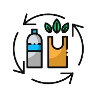
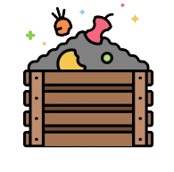

Zero Waste Lifestyle
kita hasilkan setiap harinya, demi kelestarian lingkungan kita akan menerapkan
prinsip 5R (Reduce, Reuse, Recycle, Repair, Rot), dan mengurangi dampak negatif
terhadap Bumi.
Reuse
(Menggunakan kembali)

Recycle
Mendaur ulang barang yang tidak bisa lagi digunakan, seperti botol plastik atau kertas.
Recycle
(Mendaur ulang)
Repair
(Memperbaiki)
baiki elektronik yang rusak.

Rot
Perpanjang masa pakai barang dan mengurangi kebutuhan akan barang baru, seperti memper-
baiki elektronik yang rusak.
Rot
(Mengompos)
baiki elektronik yang rusak.
Program Zero Waste
membantu anda
memasuki gaya hidup
yang lebih sehat.
Tips & Trick
dari kami untuk
mengurangi produksi
limbah sampah sehari-hari.
Peta Daur Ulang
ulang terdekat di kota
anda dengan mudah dan cepat.
Tentang penyu hijaw
Penyu Hijaw adalah platform yang didedikasikan untuk Zero Waste Journey.
Terinspirasi dari ‘Penyu Hijau’ yang terkenal dengan umur
panjang dan daya adaptasi mereka yang luar biasa, menjadi simbol
yang tepat untuk filosofi Zero Waste yang membutuhkan tekad
yang kuat untuk menghadapi tantangan dan mengubah kebiasaan
lama.
panjang dan daya adaptasi mereka yang luar biasa, menjadi simbol
yang tepat untuk filosofi Zero Waste yang membutuhkan tekad
yang kuat untuk menghadapi tantangan dan mengubah kebiasaan
lama.
Tentang kami
- Menginspirasi dan mengedukasi lebih banyak lagi masyarakat mengenai gaya hidup zero waste.
- Menyediakan tips dan trik zero waste yang dapat diterapkan dalam kehidupan sehari-hari.
- Menyediakan peta sampah untuk membantu masyarakat menemukan lokasi bank sampah dan tempat daur ulang disekitar mereka
Kota Surabaya memiliki program di mana warga dapat menukar sampah plastik dengan tiket bus.
Kota Bandung telah mengembangkan program kompos di tingkat komunitas dan sekolah untuk mengelola sampah organik.
Toko dan pasar tradisional di Kota Medan telah memulai kebijakan bebas plastik dan menyediakan pengganti alternatif seperti tas kain dan bungkus daun pisang.
Di Kota Malang, bank sampah telah berkembang pesat, dengan lebih dari 300 unit bank sampah yang membantu masyarakat mengelola sampah mereka melalui pemilahan dan daur ulang.
Reduce
(Mengurangi)
hasilkan banyak sampah sulit terurai, seperti kantong plastik dari toko.